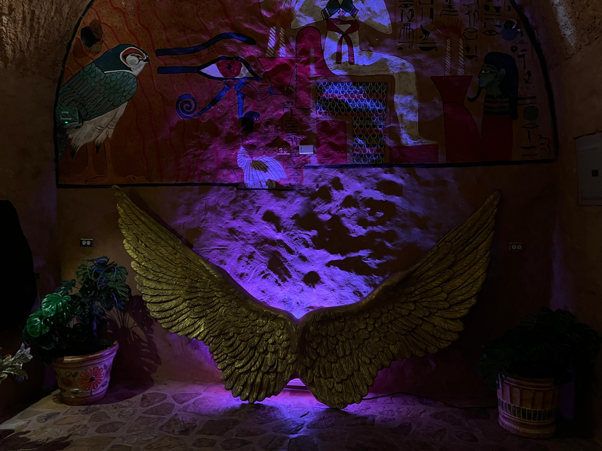
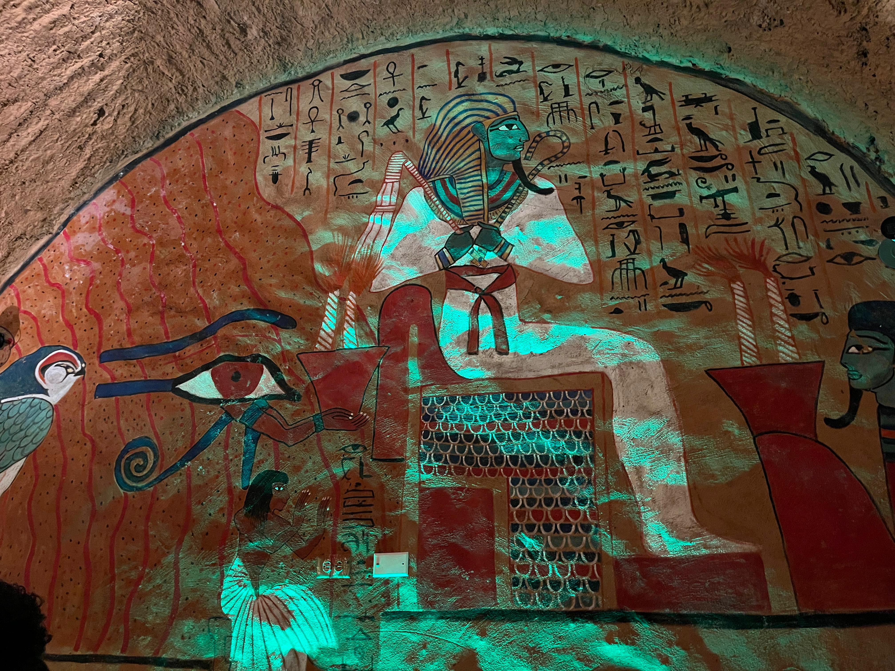
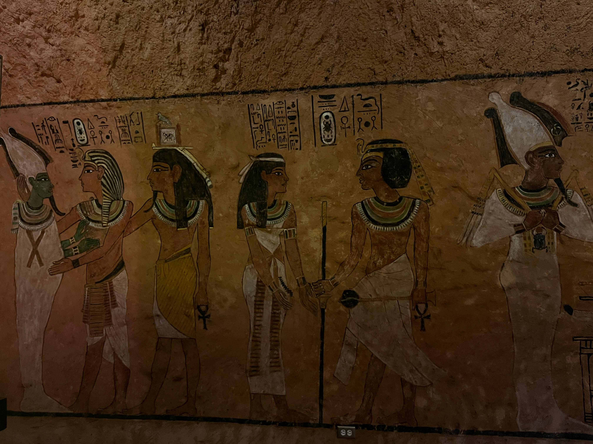
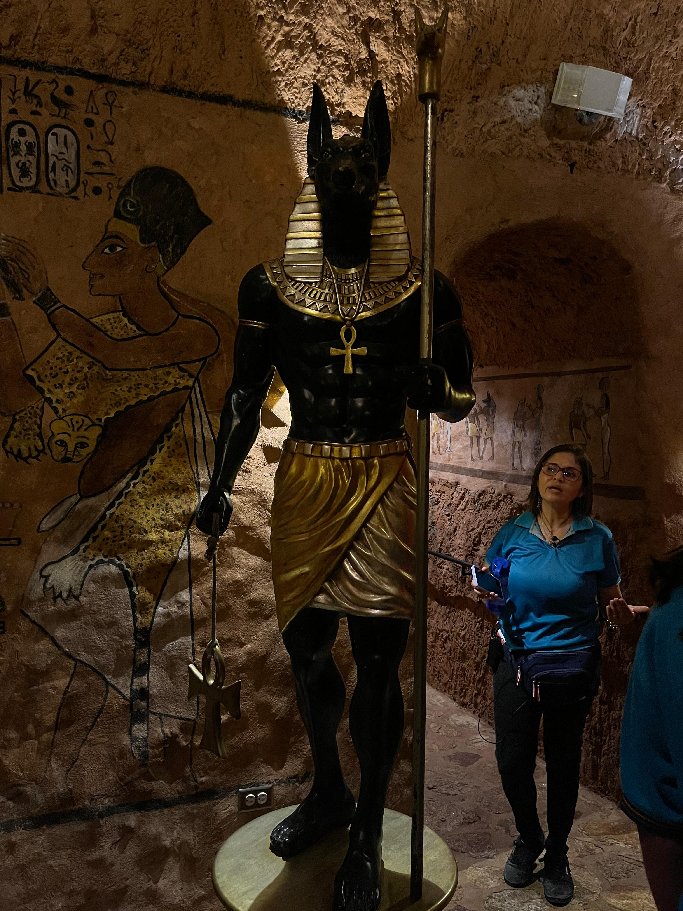

Tutankamón
✦ . ⁺ . ✦ . ⁺ . ✦
Tutankamón (c. 1342-c. 1325 a. C.)ue un faraón del Antiguo Egipto, último monarca de su familia real en el final de
la dinastía XVIII que gobernó entre 1334 y 1325 a. C. —según la cronología convencional del Imperio Nuevo de la Historia de Egipto—.
Inicialmente fue llamado Tutankatón en honor a Atón, debido a la reforma religiosa impulsada por su padre, Akenatón. Adoptó el nombre
de Tutankamón —en honor a Amón— tras la muerte de este.Su madre era hermana de Akenatón, identificada como tal por una prueba de
ADN realizada a una momia desconocida llamada «la Dama Joven», que fue encontrada en la tumba KV35.
Tutankamón accedió al trono con ocho o nueve años bajo la tutela del visir Ay, que finalmente sería su sucesor y
probablemente también era pariente. Tutankamón contrajo matrimonio con su media hermana Anjesenamón, con quien concibió dos hijas
que murieron, la primera a los cinco o seis meses de embarazo y la segunda, poco después de nacer.Los nombres del
faraón —Tutankatón y Tutankamón— se cree que significan «imagen viviente de Atón» e «imagen viviente de Amón»,
aunque el reemplazo de Atón por Amón se hizo después de la muerte de su padre, para congraciarse con el clero de Amon.



